Work / Dell Insprion and OptiPlex AIO families 2018
Dell · 2018
Dell Insprion and OptiPlex AIO families 2018

Work / Dell Insprion and OptiPlex AIO families 2018
Dell · 2018
Optiplex and Inspiron All in One Desktops.
Role: Project lead and team member
I led the design of Dell's Inspiron and OptiPlex All-in-One desktop families across two generations, a program spanning 21", 23", and 27" screen sizes and bridging consumer and commercial markets on a shared platform. The AIO display family shouldn't feel like a standalone product category, but a natural extension of Dell's broader commercial display ecosystem. Awe had to bring a holistic approach to the design which we hadn't had in the previous design. A big complain from commercial customers was that the AIO didn't match the second display and it looked like it came from a different company. That meant every surface decision, proportion, materiality, stand geometry had to hold up next to a Dell monitor on the same desk, in the same enterprise environment. I worked alongside one other designer and directed ODM manufacturing resources, carrying the program from early concept through production release over more than a year.
Shared platforms required a lot of coordinating. Throughout the program I presented to planning and procurement executives, defending design decisions that affected tooling investment across both lines simultaneously. The case for differentiation through CMF, Color, Material, and Finish, rather than structural divergence had to be made clearly and repeatedly. I learned to translate design rationale into business language, why a unified chassis reduced downstream cost, why surface and finish variation was sufficient to address different buyers, and where the limits of that strategy actually were. That alignment work was as much a part of the design process as anything on the screen.
Manufacturing the program meant living inside it. I made significant trips to Taiwan and China, spending long hours with ODM teams to ensure design intent survived the transition to production tooling. The pop-up camera is a good example of how that collaboration worked at its best. The team chose to integrate it early, committed to resolving it cleanly into the form rather than treating it as an add-on, and held that standard through every supplier conversation. Maintaining that level of intent across a manufacturing partner boundary requires presence, specificity, and trust built over time.
The consumer line underperformed in market. Looking back, that outcome was structurally embedded in the program. The commercial requirements drove the shared platform, and CMF differentiation alone wasn't enough to compete against consumer native alternatives. Platform consolidation is a legitimate strategy, but it concentrates risk when the two markets it serves don't actually want the same thing. I'd carry that forward as a governing question in any future multi segment program. It took a lot of market share loss in the consumer category to make changes to design products specifically for those customers.
A few highlighted features for this project.
Infinity display with high resolution up to 4K Ultra HD. High brightness, wide viewing angles and high color gamut deliver an amazing view.
The optional cable cover not only manages the cable routing but also provides adequate security in public spaces.
Touch version provides the articulating stand with synchronized hinges to deliver one hand articulating experience for any angle of usage including desktop mode or touch mode.
27" system for Inspiron and Optiplex with articulating stand, fixed height stand, and a height adjustable stand.
We added a pop up camera for convenience and privacy.
24" Inspiron system in White colorway.
24" Inspiron in Black colorway
Inspiron with consumer monitor.
27" Optiplex with commercial displays. One task was that we needed to make our all in ones match our displays so that they would be cohesive in an office setting. Previous systems were a mismatch to the commercial displays. This led to a poor customer experience.
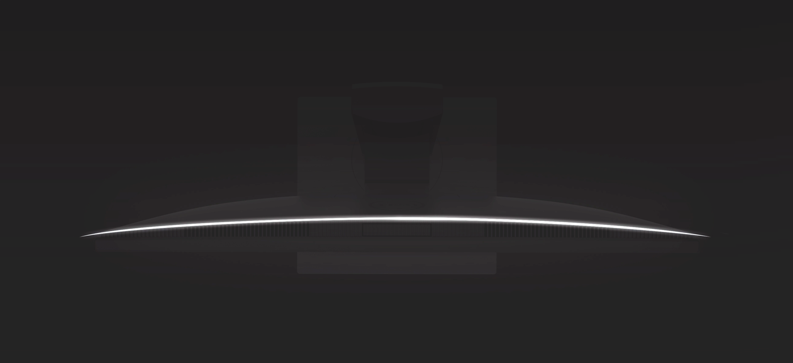
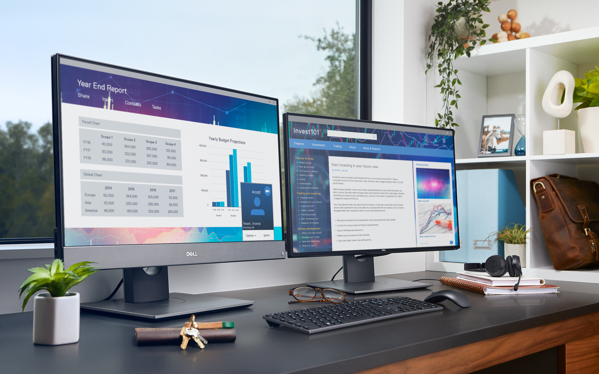
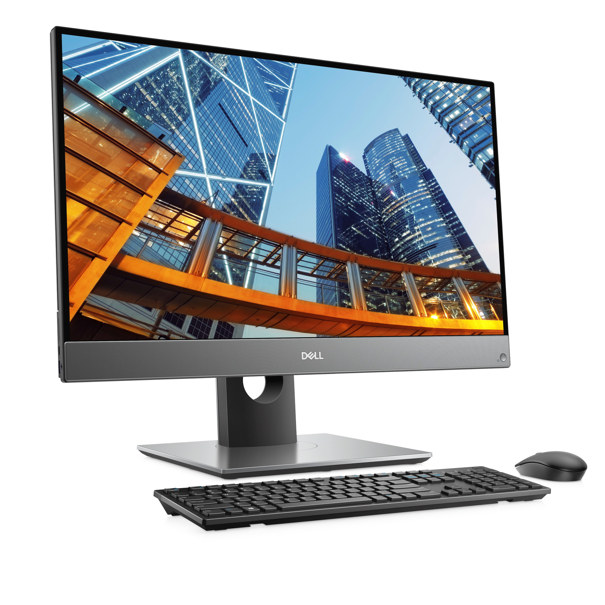
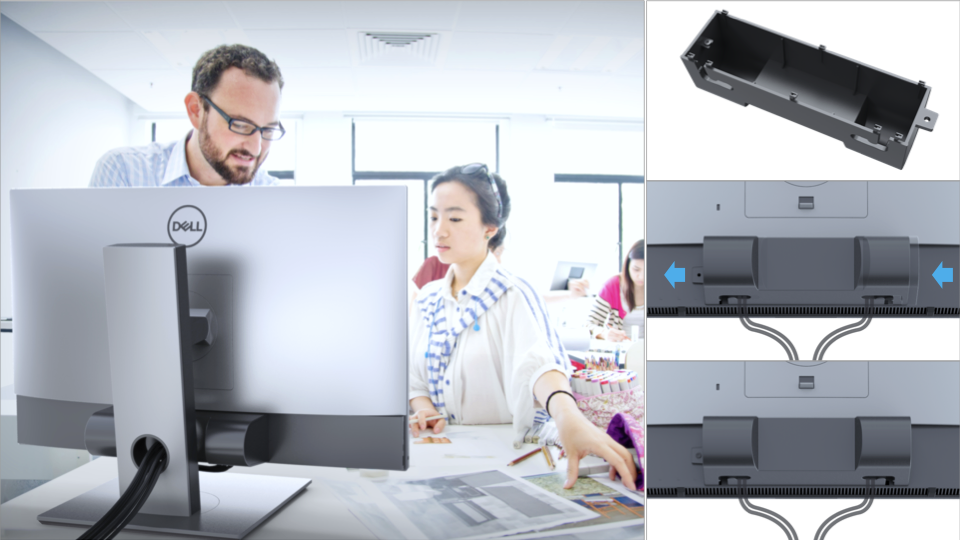
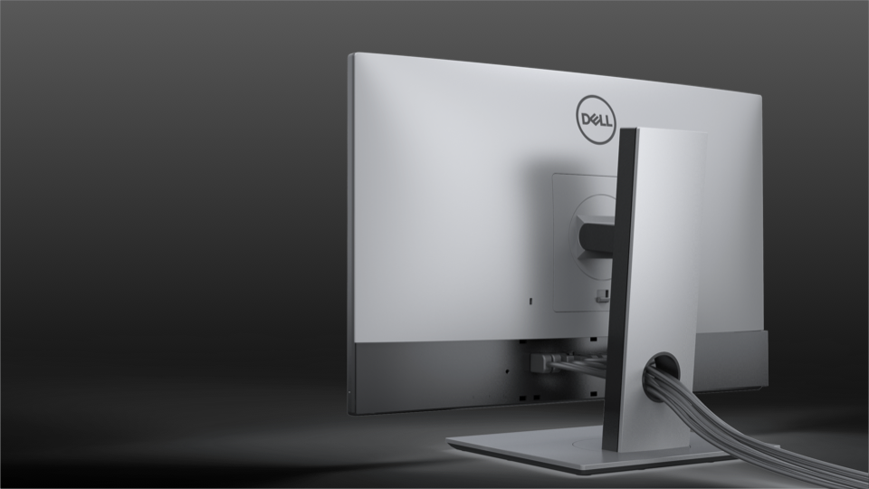
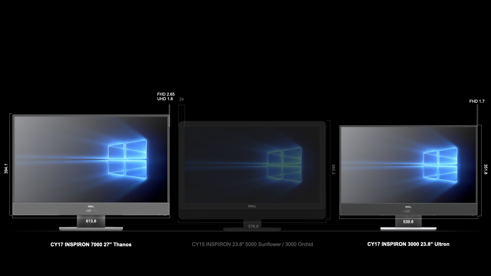
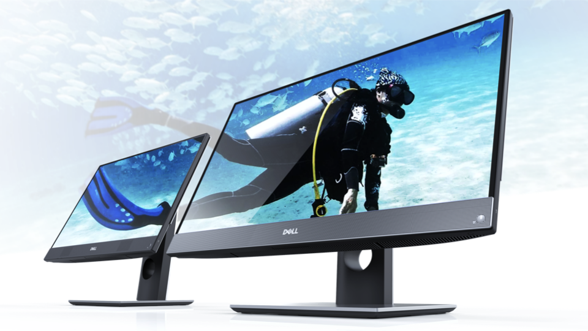
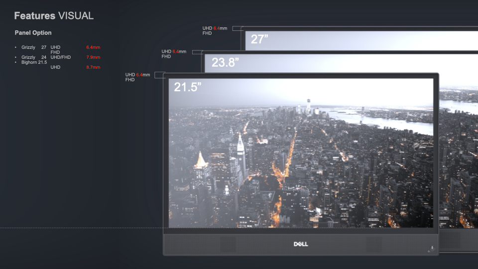
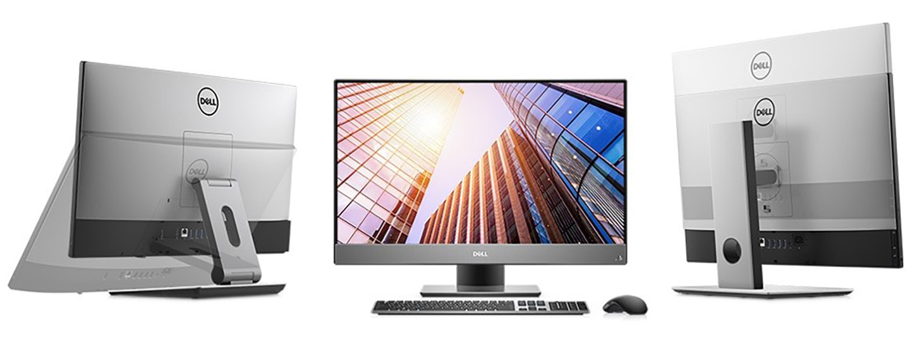
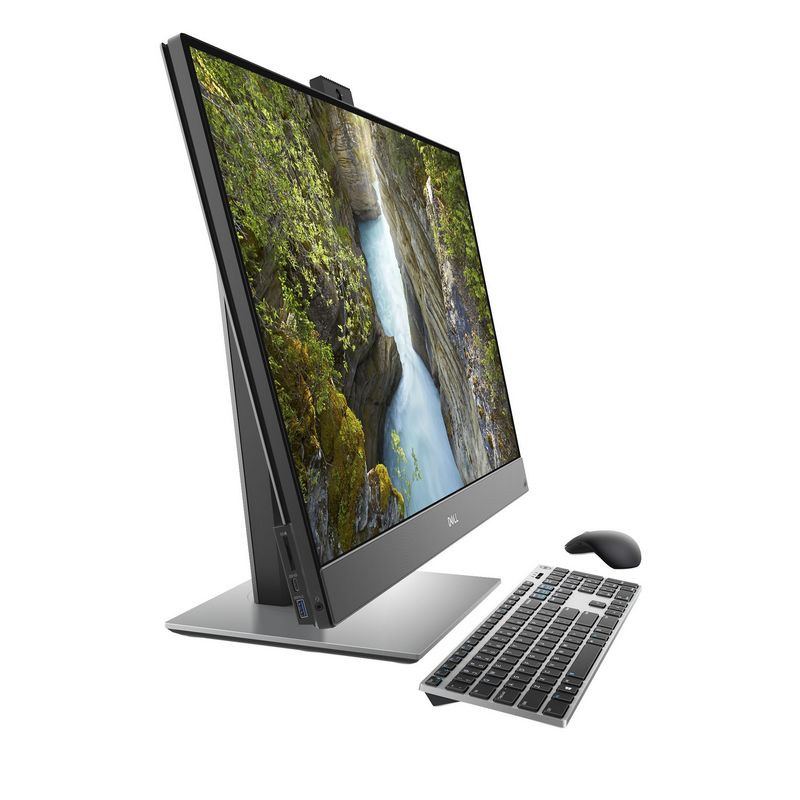
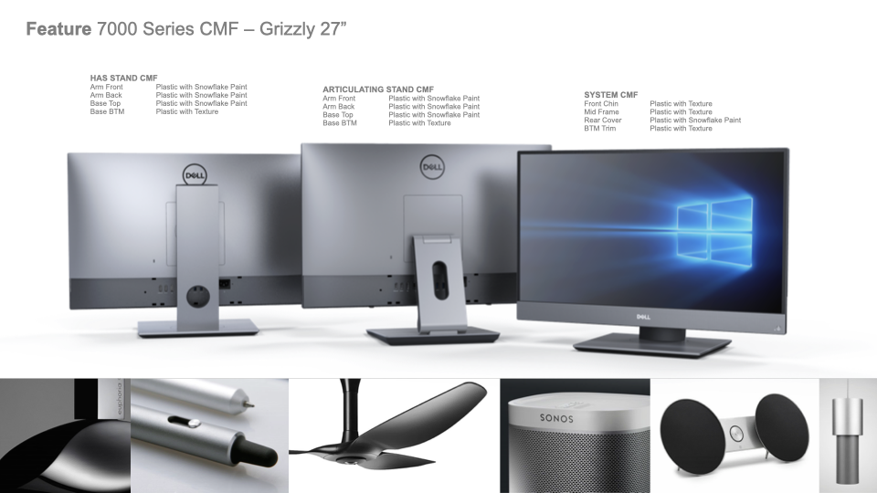
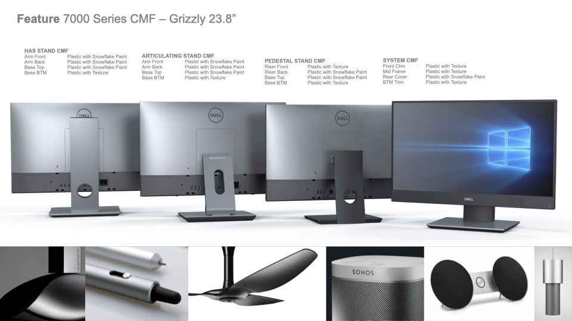
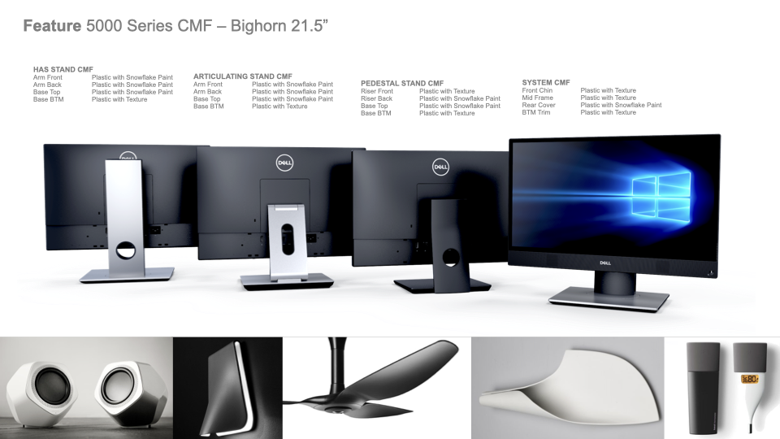
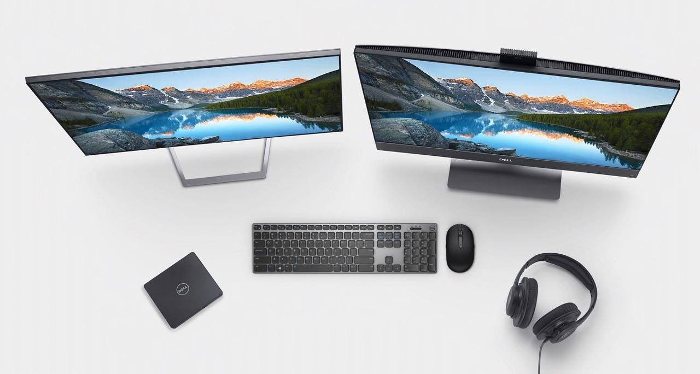
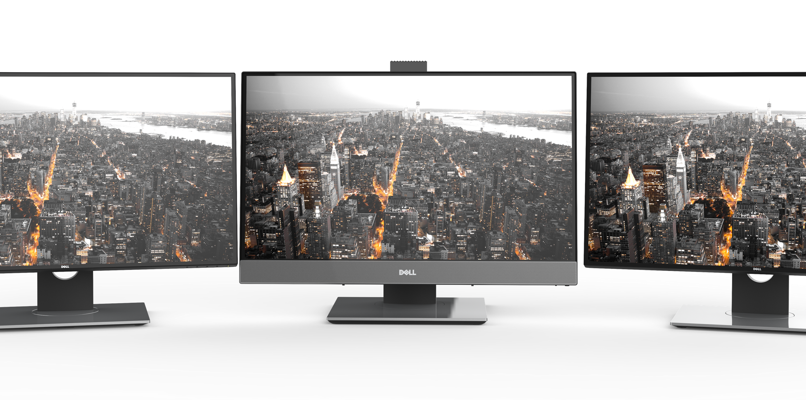